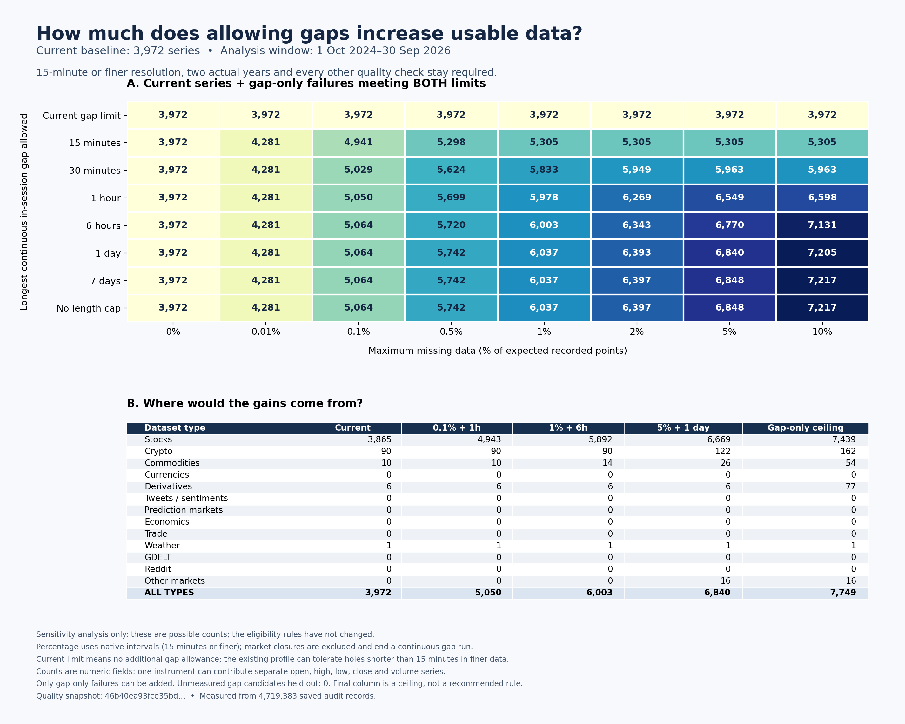

What happens if we allow missing data?
This comparison starts with the 3,972 eligible numeric series in the saved quality snapshot and shows how many more could qualify under different gap limits. The analysis covers 1 October 2024 to 30 September 2026.
The eligibility rules have not changed. Every additional series still needs 15-minute or finer native resolution, two actual years of history and a pass on every non-gap check.
Missing percentage and longest gap
Choose a column for the amount of missing data and a row for the longest gap. A series must meet both limits. The table beneath the heatmap shows which dataset types would benefit.
Open full-size figureDownload PDF


Examples from the figure
| Missing data allowed | Longest in-session gap | Eligible series |
|---|---|---|
| Current rules | Current limit | 3,972 |
| 0.1% | 1 hour | 5,050 |
| 1% | 6 hours | 6,003 |
| 5% | 1 day | 6,840 |
Most additions would be stocks. At 5% missing with a one-day gap limit, 2,804 of the 2,868 additions are stock series. Relaxing gaps alone would leave the market imbalance largely intact. New collection and repairs therefore prioritize missing market types and underrepresented stock sectors.
How to read the limits
Missing percentage is the share of expected recorded points that are absent, using each series’ own native interval of 15 minutes or finer. Scheduled market closures are excluded.
Longest in-session gap is the longest continuous run of missing expected points. A market closure ends that run, so a gap spanning several trading days can contain several separate in-session runs. Crypto trades continuously.
Current limit means no additional gap allowance. The existing profile checks 15-minute completeness; finer data can contain shorter holes. The 3,972 baseline series are retained throughout this comparison.
Counts refer to numeric fields. Open, high, low, close and volume can count separately for one instrument. Only series whose remaining failures are gaps can be added. All 3,777 such candidates had measured gap metrics; accepting every one would give a theoretical ceiling of 7,749 series.